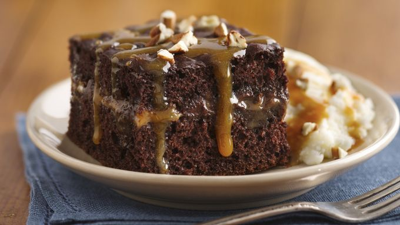

My Moms Pride and Joy: Turtle Cake

A Twist on Turtle Cake
Turtle cake has no specific known origin, however the idea was seemingly inspired by the candy Turtles. Turtles were developed in 1918 by Johnson's Candy Company (which became Demet's Candy Company in 1923) after a salesman came in and showed one of the dippers a piece of candy then the dipper pointed out that the candy looked like a turtle. After this the Johnson's Candy Company started making the same piece of candy but selling it under the name "Turtles"
This sinful recipe will knock your socks off with a classic Devils Food Cake recipe along with a delicious Caramel Recipe to use as a filling and topping for the cake. The other topping to make this chocolate caramel cake a turtle cake is the chopped pecans. Although an expensive ingredient it really pulls the entire cake together. This recipe is a classic for any party event and will definetly cure any sweet tooth.
Ingredients
Devils Food Cake
- 1 cup and 2 Tbs of All-purpose flour
- 1/2 cup cocoa powder
- dash of cinnamon
- 1 tsp baking soda
- 1/2 tsp baking powder
- 1/2 tsp salt
- 4 Tbs unsalted butter (room temp)
- 1 cup granulated sugar
- 1/4 cup firmly packed brown sugar
- 2 large eggs (room temp)
- 1 tsp vanilla extract
- 1/2 cup sour cream at room temp
- 1/2 cup hot freshly brewed coffee (french pressed, preferably chocolate undertones)
Instructions For Devil's Food Cake
- Preheat oven to 350 degrees(F) then line(parchment paper) and spray(non-stickbaking spray) one 9-inch round or an 8-inch square pan. Set aside.
- In a large bowl sift together flour, cocoa powder, baking soda, baking powder, and salt. Set aside.
- Using a stand mixer fitted with the paddle attachment or and electric hand mixer beat butter until smooth.
- Gradually add in both sugars, one at a time, and beat until the sugar has been incorporated into the butter. Increase the speed and beat on high until the mixture is fluffy and light. This process should take about 4 minutes. Scrape down sides to incorporate everything.
- Add in eggs one at a time, beating well after each addition, and scraping down the sides and bottom of the bowl as needed. Then add in vanilla extract and beat until combined.
- Combine oil and sour cream in measuring cup.
- On the lowest speed, add flour in threes alternating with the sour cream mixture. Beat until combined.
- Pour in hot coffee and let the mixture sit for about 30 seconds, then with a rubber spatula, gently stir until the batter is evenly combined.
- Pour batter contents into prepped pan and smooth top with rubber spatula.
- Bake in preheated oven for 35-45 minutes or until a toothpick comes out clean, or with a few moist crumbs attached. I personally check after the 30 minute mark depending on what pan I bake with.
- Let cool in cake pan for 20 minutes before inverting and cooling on wire rack for 1 hour.
Instructions for Caramel Topping/Filling
- In a sauce pan over medium heat, melt butter in the sauce pan.
- Add sugar and stir consistantly
- When the sugar is completely melted and has reached the amberish color it should start to buble. Remove frome heat.
- Slowly add the heavy cream and salt while stirring.
- Return to medium heat and add 1 Tbs molasses and 2 Tbs of Corn Syrup, stir well to combine then remove from heat.
- Let cool then transfer to mason jar or airtight container The caramel will get thicker as it cools.
- Let caramel cool for the remainder time the cake has to cool.
Instructions for Assembly
- After cake has completely cooled use a knife or string to cut cake into 2 seperate pieces.
- Pour a layer of caramel on one of the bases and top with chopped pecans.
- Put other layer of cake ontop of the finished base.
- Repeat step two for the top layer
- Serve in slices or squares